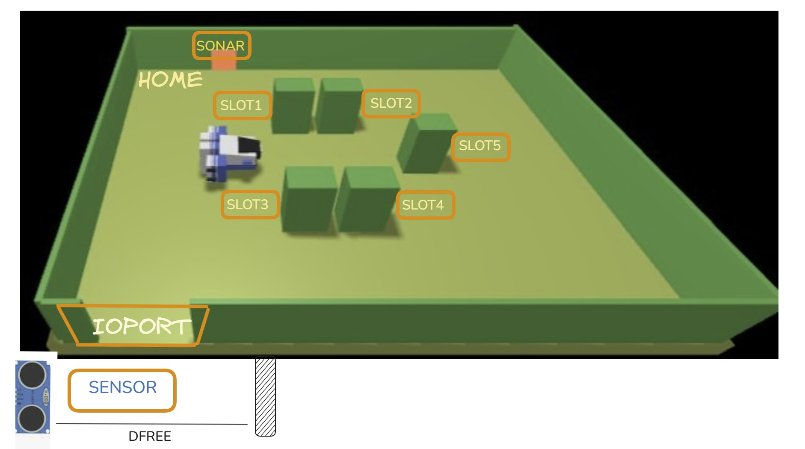

In questo sprint0 i nostri obiettivi sono di analizzare e individuare sottoinsiemi di requisiti forniti dal committente e definire il nostro problema, per poi in futuro suddividere i sottoinsiemi in successivi sprint da eseguire eventualmente anche in parallelo, improntare le componenti della nostra archiettura (macrocomponenti principali & interazioni tra loro sotto forma di messaggi).
È la stiva della nave, cioè l’area di lavoro e piatta dove vengono caricati i container con i prodotti. In questo progetto è una zona rettangolare con degli slot e una porta di ingresso/uscita (IOPort). Verrà utilizzato dall'attore CargoService.
È il robot a guida differenziale (Differential Drive Robot) incaricato di spostare i container dentro la stiva e piazzarli nello slot assegnato. Dopo il lavoro torna sempre alla sua posizione “HOME”. Ci viene gia fornito dal committente.
Sono i beni/merci che devono essere caricati sulla nave. Ogni prodotto viene messo in un container di dimensioni prefissate e registrato in un sistema.
Il peso del prodotto/container. Serve per verificare che non venga superato il limite massimo di carico della nave (MaxLoad). Sarà un attributo del Prodotto.
È il servizio software che gestisce la registrazione dei prodotti. Quando inserisci un prodotto specificando il peso, lui restituisce un identificativo unico (PID). Esso viene implementato come Attore qak.
È la porta di ingresso/uscita della stiva. Davanti a questa porta c’è un sensore sonar che rileva se un container è presente. È il punto dove il prodotto viene consegnato prima che il robot lo carichi. Sarà un macrocomponente del nostro sistema.
Slots: sono le aree (4 in totale) all’interno della stiva dove i container vengono sistemati. Uno slot è già occupato in modo permanente, gli altri inizialmente sono liberi.
Sensors: in questo caso si parla di un sonar davanti all’IOPort che rileva la presenza dei container e segnala eventuali anomalie (tipo guasto se non misura più distanze corrette).
È il tipo di robot mobile con due ruote motrici indipendenti. Si muove facendo girare le ruote a velocità diverse (come i robot aspirapolvere), ed è quello usato come cargorobot.
Si elencano di seguito le componenti software fornite dal committente
Componente software che esegue i comandi di movimento del DDR-robot. Non è a conoscenza della tecnologia con il quale il robot è stato implementato.
Software per la misurazione della distanza dal sonar (componente hardware) e per accendere un LED
WENV è un ambiente di simulazione software (“Web Environment”) usato per testare il sistema, mostrare la stiva, lo stato degli slot e i movimenti del robot tramite un’interfaccia grafica web.

I POJO sono essenziali per costruire il modello di dominio in DDD.
Sono usati per:
• Rappresentare entità con identità persistente (es. LoadedProduct)
• Definire value object immutabili (es. LoadRequest, ValidationResult)
• Formare aggregati, unità coerenti per la consistenza dei dati
• Incapsulare logica di business passiva e stateless
I POJO sono passivi, non gestiscono il loro stato in autonomia nel tempo in risposta a eventi esterni e non hanno code di messaggi proprie
Il modello ad Attori si basa su entità autonome che comunicano tramite messaggi. Un Attore Qak è un componente attivo con un proprio flusso di controllo autonomo e uno stato interno.
Le loro caratteristiche principali includono:
• Gestione autonoma dello stato: Mantengono il proprio stato interno
• Comunicazione a messaggi: Interagiscono esclusivamente inviando e ricevendo messaggi (Dispatch, Request, Reply, Event), promuovendo isolamento e resilienza
• Coda di messaggi locale: Ogni Attore ha una coda (msgQueue) per processare i messaggi sequenzialmente, gestendo naturalmente l'esigenza di non elaborare più richieste contemporaneamente
• Comportamento come FSM: Il loro comportamento può essere modellato come una macchina a stati finiti (FSM)
• Adatti a sistemi distribuiti e microservizi: Il modello Qak è specificamente pensato per la progettazione di prototipi di sistemi distribuiti, con attori che si comportano come FSM, strettamente correlati all'architettura a microservizi
• Qak come DSL: Il linguaggio Qak è un Domain Specific Language (DSL) che fornisce un alto livello di astrazione per definire modelli eseguibili di sistemi basati su attori, aiutando a colmare l'abstraction gap
• Raggruppamento in contesti: Gli attori sono raggruppati in contesti che gestiscono le interazioni di rete tramite protocolli come TCP, CoAP, MQTT
La scelta dipende dalla necessità di comportamento autonomo e stateful (Attori) o di rappresentazione dati/logica stateless (POJO)
• I POJO sono ottimi per le strutture dati e le regole di business fondamentali che operano su tali dati, fungendo da "mattoni" all'interno di un servizio o di un Attore
• Gli Attori sono ideali per gestire processi complessi e stateful, orchestrazioni e comunicazioni asincrone in ambienti distribuiti
In pratica, un sistema moderno userà spesso entrambi: gli Attori possono utilizzare i POJO per strutturare i dati che gestiscono internamente o che scambiano tramite messaggi. Questo approccio ibrido consente di beneficiare sia di una modellazione robusta del dominio sia dei vantaggi della computazione distribuita basata su messaggi.
Qak (o Qak Actors) non è un linguaggio di programmazione generico, ma piuttosto un linguaggio di modellazione eseguibile (DSL - Domain Specific Language) specificamente progettato per l'analisi e la progettazione di prototipi di sistemi distribuiti. La "Q" in Qak sta per "quasi" ("quasi" un attore), indicando che è un'astrazione che mira a colmare l'abstraction gap tra i concetti di alto livello e la loro implementazione. La "k" aggiunta (Qak) si riferisce alla sua implementazione in Kotlin, senza l'uso di supporti.
Il cuore di un sistema Qak è il modello ad attori, un paradigma computazionale ispirato alla fisica, in cui ogni componente del sistema è un attore autonomo che comunica tramite lo scambio di messaggi. Un attore Qak è un componente attivo con un nome univoco e un flusso di controllo autonomo. Si comporta come un automa a stati finiti (FSM), gestendo i messaggi ricevuti in relazione al suo stato corrente e alle transizioni definite. Ogni attore possiede una coda di messaggi locale (msgQueue) per elaborare i messaggi sequenzialmente, garantendo che "altre richieste non siano elaborate" mentre una è in corso.
Gli attori Qak sono raggruppati in contesti, che fungono da nodi logici di elaborazione. Questi contesti gestiscono gli attori al loro interno e li abilitano alle interazioni via rete tramite protocolli come TCP, CoAP e MQTT. L'infrastruttura Qak e la Qak software factory sono responsabili della generazione di codice Kotlin e di altre risorse, mappando i concetti di alto livello del modello in strutture eseguibili.
Qak (o Qak Actors) è un linguaggio specifico del dominio (DSL) pensato per l'analisi, la progettazione e la prototipazione di sistemi distribuiti, in particolare quelli basati su architetture a microservizi.
Perché utilizziamo Qak:
Link alla documentazione ufficiale Qak
Gli attori consentono di gestire la distribuzione o la concentrazione dei componenti sui nodi della struttura. In questa fase dello sviluppo non siamo ancora nella condizione tale da poter stabilire il grado di distribuzione di tutta l'archiettura.
Le componenti che rappresentano l'entità fisica sappiamo gia che risiederanno sul nodo dedicato (Sonar & Led). Stessa cosa vale per il componente che sostituirà Basicrobot.
In aggiunta alle Componenti del committente, si svilupperanno i seguenti Macrocomponenti:
Il CargoService rappresenta il nucleo della logica di business del sistema, allineandosi al concetto di "Gestione Carico" (Loading Management) identificato come Bounded Context
Le sue responsabilità principali sono:
• Gestire le richieste di carico: Riceve le richieste esterne per il carico di un prodotto e ne gestisce l'intero ciclo di vita.
• Orchestrare il processo: Agisce come orchestratore della saga di caricamento. Decide se accettare o rifiutare una richiesta dopo aver eseguito le necessarie validazioni, come il controllo del peso massimo e la disponibilità di slot nella stiva
• Coordinare gli altri componenti: Interagisce con gli altri macro-componenti per portare a termine il processo. Ad esempio, richiede informazioni sul prodotto (come il peso) a un servizio dedicato, verifica la disponibilità di slot interrogando il componente hold, e comanda al cargorobot di eseguire la movimentazione.
• Garantire l'elaborazione sequenziale: Assicura che una sola richiesta di carico venga processata alla volta, mantenendo lo stato dell'operazione corrente
Il cargorobot è il componente software che astrae e controlla il robot DDR (Differential Drive Robot) fisico o virtuale, che opera come un carrello di trasporto (transport trolley).
Le sue funzioni principali sono:
• Esecuzione di comandi di movimento: Funge da puro esecutore di comandi di basso livello inviati da un componente di livello superiore (come il CargoService). Questi comandi possono essere movimenti elementari (avanti, indietro, ruota), step di durata definita, o piani di movimento complessi (doplan).
• Indipendenza dalla tecnologia: Offre un'interfaccia software che permette di operare con il robot indipendentemente dalla sua realizzazione specifica (reale o virtuale), nascondendo i dettagli tecnologici.
• Interazione con l'ambiente: Può essere una fonte di informazioni, emettendo eventi relativi al suo stato o a ciò che percepisce, come i dati di un sonar (sonardata).
Il sonar è un agente software situato che si interfaccia con il sensore a ultrasuoni fisico (es. HC-SR04), tipicamente montato su un dispositivo come un Raspberry Pi.
Le sue responsabilità sono:
• Astrazione dell'hardware: Nasconde i dettagli di basso livello dell'interazione con il sensore fisico.
• Rilevamento e misurazione: Misura la distanza da eventuali ostacoli e fornisce questi dati al sistema. Nel contesto specifico del sistema cargo, il suo ruolo cruciale è rilevare la presenza di un container nell'area di I/O (IOPort).
• Fornitura di dati filtrati: Invia i valori di distanza rilevati dopo averli filtrati per renderli significativi per il livello applicativo (es. valori interi entro un certo range).
• Emissione di eventi: Comunica le informazioni rilevanti al resto del sistema emettendo eventi, come sonardata o un più specifico evento di business come obstacle.
• Controllo: Può essere controllato tramite comandi remoti come sonarstart e sonarstop per attivarne o disattivarne il funzionamento.
Il led è un altro agente software situato con la funzione di attuatore. È responsabile del controllo di un LED fisico, tipicamente connesso a un pin GPIO di un Raspberry Pi.
• Fornire feedback visivo: La sua funzione primaria è quella di segnalare visivamente lo stato del sistema o di un particolare sottosistema.
• Esporre un'interfaccia di controllo: Deve offrire un'interfaccia semplice per essere comandato da altri componenti, accettando messaggi come turnOn e turnOff.
Il componente hold è un modello software che rappresenta lo stato della stiva della nave (cargo hold). Questo si allinea con il Bounded Context "Inventario Stiva" (Hold Inventory).
• Gestire l'inventario della stiva: È la fonte autorevole (source of truth) per lo stato di occupazione della stiva. Mantiene una mappa degli slot, registrando quali sono liberi e quali sono occupati.
• Tracciare i prodotti: Per ogni slot occupato, memorizza quale prodotto (identificato da un PID) vi è stato collocato.
• Fornire informazioni di stato: Risponde a interrogazioni da parte di altri servizi, come il CargoService (che ha bisogno di sapere se ci sono slot liberi) e la web-gui (che deve visualizzare la mappa della stiva).
La web-gui è l'interfaccia uomo-macchina (HMI) del sistema, concepita come un "dispositivo di I/O evoluto". Corrisponde al Bounded Context "Visualizzazione Stiva" (Hold Visualization).
• Visualizzazione dinamica: Fornisce una rappresentazione grafica e in tempo reale dello stato della stiva.
• Aggiornamento automatico: Deve aggiornarsi automaticamente per riflettere i cambiamenti di stato nel backend senza che l'utente debba ricaricare la pagina. Questo suggerisce l'uso di tecnologie push come le WebSocket.
• Interazione utente: Permette agli utenti di interagire con il sistema, ad esempio inviando comandi per avviare nuove richieste di carico.
• Architettura disaccoppiata: Può essere realizzata come un microservizio a sé stante, disaccoppiato dalla logica di business principale, con cui comunica attraverso protocolli di messaggistica come MQTT o tramite API.
Il modello ad attori sfrutta la comunicazione tramite messaggi e dai requisiti forniti siamo in grado di comprendere alcune delle interazioni che avvengo tra gli attori. Si indicano di seguito i messaggi che sono in grado di scambiarsi tra di loro.
Request load_product : load_product(PID)
richiesta di carico di un prodotto con PID
Reply load_accepted : load_accepted(SLOT) for load_product restituisce lo slot assegnato
Reply load_refused : load_refused(CAUSA) for load_product
ritorna la causa del mancato carico
Serviranno successive decisioni per la modellazione e l'implementazioni di messaggi tra attori per ulteriori funzionalità.
In questa prima fase i test servono a controllare che i prototipi dei componenti interagiscano come richiesto dal committente.
State richiesta {
println("[cargotest] Invia una nuova richiesta") color yellow
// Invio della richiesta
request cargoservice -m load_product:load_product(1)
request cargoservice -m load_product:load_product(1)
request cargoservice -m load_product:load_product(1)
}
Goto waiting_for_response
State waiting_for_response {
}
Transition t0
whenReply load_accepted -> loadAccepted
whenReply load_refused -> loadRefused
State loadAccepted {
println("[cargotest] risposta arrivata") color blue
onMsg(load_accepted : load_accepted(SLOT)) {
[# val Msg = payloadArg(0).toInt() #]
println("[cargotest] Richiesta accettata, slot n. $Msg ") color yellow
}
}
Goto waiting_for_response
State loadRefused {
onMsg(load_refused : load_refused(CAUSA)) {
[#
var Msg = payloadArg(0)
#]
println("[cargotest] Richiesta rifiutata causa : $Msg ") color yellow
}
}
Successivi allo sprint0 si distinuguono i seguenti sprint operativi del nostro processo Scrum